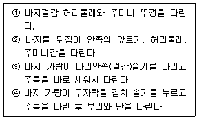
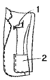
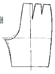
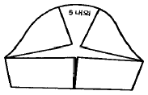

양장기능사 (2002-01-27 기출문제)
1과목: 임의 구분
1. 스커트 길이가 무릎선에서 밑으로 13‾7cm 정도 내려온 것을 가리키는 것을 무엇이라 하는가?
- 샤넬라인
- 미니
- 미디
- 맥시
(정답률: 82%)

2. 문화식 원형 제도시 뒤목둘레 폭은 어떤 방식에 의해 산출되는가?
- 네크 사이즈를 재서 산출한다.
- 가슴 둘레를 나누어서 산출한다.
- 앞둘레를 나누어서 산출한다.
- 주어진 네크 사이즈를 나누어서 산출한다.
(정답률: 59%)
3. 테일러 칼라의 슈우트를 가봉후에 재단해도 되는 것은?
- 소매
- 뒷길
- 앞길
- 안단
(정답률: 88%)
4. 보기는 바지 다림질 순서이다. 일반적으로 가장 올바른 순서는?

- ①-②-③-④
- ④-①-③-②
- ②-③-①-④
- ②-①-③-④
(정답률: 62%)
5. 윗실을 바늘귀로 유도하는 한편, 윗실의 장력을 조절하는 것은?
- 바늘대기구
- 실채기기구
- 실조절기구
- 북집기구
(정답률: 52%)
6. 모슬린에 가장 적합한 재봉틀 바늘은?
- 5호
- 7호
- 11호
- 14호
(정답률: 80%)
7. 다음 중 재봉틀의 밑실이 끊어지는 경우와 상관이 없는 것은?
- 북에 결함이 있다.
- 노루발 압력에 결함이 있다.
- 실 상태에 결함이 있다.
- 바늘판에 결함이 있다.
(정답률: 52%)
8. 다음 중 박음질 기구와 상관이 가장 먼 것은?
- 바늘대 기구
- 노루발 기구
- 윗실조절 기구
- 북집 기구
(정답률: 66%)
9. 운동복, 와이셔츠, 작업복 등을 바느질할 때 가장 많이 쓰이는 방법은?
- 가름솔
- 통솔
- 쌈솔
- 공그르기
(정답률: 80%)
10. 다음 중 봉사에 의한 퍼커링(puckering)발생의 설명으로 맞는 것은?
- 옷감의 밀도가 높을수록 가는 봉사를 사용한다.
- 옷감이 자연 섬유인 경우 세탁 후 퍼커링이 발생 안 한다.
- 재봉실의 장력을 크게하면 같은 천일 경우에는 시임 퍼커링이 일반적으로 적어진다.
- 박음질할 때 두께가 증가하면 퍼커링은 감소하는 경향이 있다.
(정답률: 46%)
11. 다음 중 다리미의 지나친 가열로 인한 현상이 아닌것은?
- 절단이 된다.
- 변색이 된다.
- 수축된다.
- 용융한다.
(정답률: 89%)
12. 인체의 측정에서 인체는 우선 체간과 사지로 구분하는데 다음 중 체간부에 해당되지 않은 것은?
- 복부
- 두부
- 흉부
- 하부
(정답률: 73%)
13. 옷감을 재단 할 때 어깨와 옆선의 시접 분량으로 가장 적합한 것은?
- 0.5㎝
- 1㎝
- 2㎝
- 3㎝
(정답률: 84%)
14. 옷감을 정리할 때 유의사항으로 적합하지 않은 것은?
- 옷감을 물에 담글 때는 주름이 잘 잡히게 하여야한다.
- 옷감은 줄어드는 것을 방지하여야 하고, 올을 바르게 정리하여야 한다.
- 물에서 건질때는 빨래판 위에다 건져 놓고, 접어서 물기를 눌러 뺀 후에 말린다.
- 다리미의 사용은 옷감이 늘어나지 않도록 누르는 형태로 다린다.
(정답률: 76%)
15. 옷감 위에 옷본을 놓고 표시할 때 반드시 표시하지 않아도 되는 것은?
- 완성선
- 다트 위치
- 시접의 분량
- 단추구멍 위치
(정답률: 76%)
16. 옆 디자인에서 1번 포켓의 이름은?

- 플랩 포켓
- 바운드 포켓
- 웰트 포켓
- 인씸 포켓
(정답률: 64%)
17. 아우어 글라스 실루엣이란?
- 윤곽이 원통처럼 된 것을 통틀어 하는 말이고 튜블러 실루엣이라고도 불린다.
- 웨이스트 라인을 조이고 그 위와 아래를 부풀게 한 윤곽이다.
- 허리를 조이지 않는 직선적인 실루엣이다.
- 품이 가느다란 실루엣이고, 칼럼실루엣이라고도 할수 있다.
(정답률: 70%)
18. 그림과 같이 바지를 보정하는 경우는?

- 뒤 허리 밑에 가로 군주름이 생길 때
- 힙 아래 부분이 늘어질 때
- 뒤 밑위 부분이 당겨질 때
- 힙 사이즈가 클 때
(정답률: 67%)
19. 쟈켓의 안감 박기에서 틀린 설명은?
- 앞길 안감과 안단을 박을 때 두 장의 재질이 다르므로 안감 쪽을 보고 박는다.
- 앞길 안감 다아트는 부분적으로 박고 나머지 부분은 시침하여 다림질로 꺾어준다.
- 뒤트임이 있는 뒷중심 안감 시접은 입어서 오른쪽으로 꺾는다.
- 어깨 옆솔기 안감 시접은 뒤로 보낸다.
(정답률: 49%)
20. 팔자뜨기할 때 주의사항으로 틀린 내용은?
- 어슷시침과 같은 방법으로 하는데 땀이 작고 촘촘하다.
- 안에서는 八자의 형태로 나타나고 겉에서는 실 땀이 거의 나타나지 않게 한다.
- 테일러링할 때 칼라에 심지를 부착시키는 바느질법이다.
- 백색의 면사로 한다.
(정답률: 45%)
2과목: 임의 구분
21. 정상체 원형제도 시 기본이 되는 항목은?
- 등길이
- 목둘레
- 허리나비
- 가슴둘레
(정답률: 73%)
22. 다음 그림과 같은 소매 활용법은?

- 반팔 슬리브
- 퍼프 슬리브
- 요크 슬리브
- 다아트 슬리브
(정답률: 66%)
23. 재료 원가계산에 포함되지 않는 것은?
- 원재료
- 부재료
- 보조재료
- 연단재료
(정답률: 72%)
24. 스커트 원형제도에서 가장 중요한 항목은?
- 엉덩이 둘레
- 허리 둘레
- 스커트 길이
- 엉덩이 길이
(정답률: 83%)
25. 스커트 형태에 따른 명칭에 해당하는 것은?
- 미니 스커트
- 풀랭스 스커트
- 맥시 스커트
- 플레어 스커트
(정답률: 84%)
26. 어깨선 밑에 사선의 군주름이 생긴 경우의 보정 방법은?
- 들뜨면서 생기는 군 주름을 핀을 꽂아 없애고 패턴에 대어 보정하고 목둘레선과 어깨선을 내려준다.
- 어깨선에서 다트의 분량을 군주름이 없어지는 분량 만큼 잡아준다.
- 어깨선의 시침실을 뜯어 없어지는 군주름 분량만큼 낸 후 핀을 꽂아 보정하되 그 분량만큼 어깨선을 올린다.
- 진동둘레 밑부분을 내려주고 옆선쪽으로 내어 주고 네크라인에서 사선의 방향으로 들뜨는 분량만큼 핀으로 접어 준다.
(정답률: 24%)
27. 옷감의 필요량을 계산한 것 중 옳바른 것은?
- 110㎝ 폭의 옷감으로 반소매 블라우스를 제작할 경우 - (블라우스 길이× 2)+소매길이+시접(7-8㎝)
- 110㎝ 폭의 옷감으로 무릎길이의 타이트 스커트를 제작할 경우- 스커트 길이 + 시접(7-8㎝)
- 110㎝ 폭의 옷감으로 긴 슬랙스를 제작할 경우- [슬랙스 길이+시접(8-10㎝)]× 2
- 110㎝ 폭의 옷감으로 긴소매의 원피스를 제작할 경우- 옷 길이× 2+소매길이+시접(8-10㎝)]
(정답률: 40%)
28. 기성복 제품의 원가 상승 혹은 하락 요인이 되는 설명 중 바르지 않은 것은?
- 복잡한 옷의 경우는 인건비가 많이 들므로 가격상승의 요인이 된다.
- 원단 값은 가격 결정에 중요한 역할을 하므로 기성복 생산의 경우에는 값싼 원단을 사용하는 경우도 있다.
- 작업과정을 자동화하면 인건비를 줄일 수 있으므로 원가하락에 무조건 도움이 된다.
- 부속품비는 옷을 만드는데 드는 비용 중 비교적 큰 부분을 차지하므로 비용을 절감하기 위해서는 가격이 낮은 부속품을 사용한다.
(정답률: 73%)
29. 원형 제도방법 중 병용식 제도법이란?
- 초보자에게 적당한 원형제도방법이다.
- 단촌식과 장촌식의 방법을 함께 이용한 제도법이다.
- 대량생산되는 의복에 적합한 원형제도방법이다.
- 입체재단에 많이 썼던 원형제도방법이다.
(정답률: 75%)
30. 블라우스의 겨드랑이 밑이 당기는 경우 올바른 보정은?
- 진동둘레의 밑부분을 올려주고, 진동둘레의 밑단분을 내려준다.
- 어깨선의 시침실을 뜯어 군 주름이 없어질때까지 어깨선에서 잡아 옆선을 줄여준다.
- 진동둘레의 밑부분을 내려주고, 옆선쪽으로도 내주어 진동둘레를 넓혀준다.
- 다트의 분량을 군주름이 없어지는 분량만큼 잡아주고 그 분량만큼 밑단분을 내려준다.
(정답률: 68%)
31. 직물의 분류 중 원료섬유에 의한 분류에 해당되지 않는 것은?
- 교직물
- 문직물
- 혼방직물
- T/C직물
(정답률: 29%)
32. 다음 섬유 중 흡습하면 강도가 증가하는 것은?
- 아마
- 양털
- 레이온
- 나일론
(정답률: 56%)
33. 직물의 가공법 중에서 Wash and wear(W&W)가공의 주된 목적은?
- 직물의 강도를 증가시킨다.
- 직물이 더러움을 덜타게 한다.
- 합성직물의 정전기 발생을 막는다.
- 직물에 구김살이 덜가게 한다.
(정답률: 39%)
34. 다음 중 의복의 방충에 가장 좋지 않은 것은?
- 신문지
- 파라디클로로 벤젠
- 푸세한 보자기
- 오동나무 장롱
(정답률: 48%)
35. 명주를 가장 손쉽게 손상시키는 약품은?
- 암모니아수
- 비누
- 규산나트륨
- 수산화나트륨
(정답률: 52%)
36. 아크릴 섬유의 특징이 아닌 것은?
- 체적감이 있다.
- 흡습성이 좋다.
- 내일광성이 좋다.
- 보온성이 우수하다.
(정답률: 43%)
37. 10cm의 섬유에 외력을 가하여 11.0cm로 늘인 후 외력을 제거하였더니 10.5cm가 되었다. 이 섬유의 탄성회복률은 얼마인가?
- 20%
- 30%
- 50%
- 70%
(정답률: 65%)
38. 측면 모양이 리본상의 꼬임을 가진 섬유는?
- 양모
- 아마
- 견
- 면
(정답률: 63%)
39. 편성물의 기본이 되는 조직은?
- 평편, 고무편, 펄편
- 평편, 펄편, 터크편
- 레이스편, 평편, 고무편
- 양면편, 평편, 고무편
(정답률: 54%)
40. 재생 셀룰로스레이온은 젖었을 때 강력이 줄어든다. 줄어드는 정도는?
- 5∼10%
- 20∼30%
- 40∼60%
- 70∼80%
(정답률: 40%)
3과목: 임의 구분
41. 청록색 잎이 우거진 속에 피어 있는 빨강 장미가 한결 아름답고 뚜렷하게 보이는 현상은?
- 명도대비
- 채도대비
- 보색대비
- 색상대비
(정답률: 62%)
42. 다음 중 찬 감정의 색으로 짝지워진 것은?
- 보라, 파랑, 감청
- 귤색, 연두, 파랑
- 자주, 연두, 보라
- 파랑, 남색, 청록
(정답률: 74%)
43. 색의 대비를 가장 잘 설명한 것은?
- 주변색의 영향으로 다른 색으로 변해 보이는 현상을 뜻한다.
- 색의 크기에 따라 다르게 보이는 현상을 뜻한다.
- 2등분된 반전도형을 뜻한다.
- 주위색의 영향으로 인접색에 가깝게 느껴지는 경우를 뜻한다.
(정답률: 54%)
44. 일반적으로 색은 어떠한 사람에게도 비슷한 감정을 주는 데 이것은 연상감정 때문이다. 명랑, 광명, 희망, 유쾌 등을 가장 잘 나타내는 색은?
- 파랑
- 노랑
- 빨강
- 보라
(정답률: 67%)
45. 일반적으로 나이가 젊은 층이 선호하는 의복의 배색은?
- 한색계의 중명도
- 한색계의 저채도
- 난색계의 고채도
- 난색계의 저명도
(정답률: 62%)
46. 조형의 요소 중 빈 공간속의 부유물 같은 것으로서 무차원이라는 추상의 세계에 존재하는 것은?
- 점
- 선
- 면
- 입체
(정답률: 47%)
47. 시각적인 요소로서 현실적인 형(real shape)이란?
- 선
- 점
- 산
- 면
(정답률: 37%)
48. 아뜰리에(Atelier)란?
- 재단사의 전용실
- 패턴사의 회의실
- 디자이너의 내실
- 디자이너의 작업장
(정답률: 72%)
49. 색의 3속성을 3차원의 공간에다 계통적으로 배열한 것을 무엇이라 하는가?
- 색상환
- 색입체
- 표색계
- 톤별 분류표
(정답률: 60%)
50. 색채와 감정의 관계에 대한 설명 중 틀린 내용은?
- 색채의 딱딱한 감과 부드러운 감은 채도와 명도에 좌우된다.
- 한색에 중명도 이하의 색은 주로 딱딱한 느낌을 준다
- 스피드 감을 주는 색은 장파장계열의 색이다.
- 난색 계열은 높은 명도, 채도를 사용하며 진정효과를 줄 수 있다.
(정답률: 55%)
51. 사문조직으로 제직된 직물은?
- 진(jean)
- 멜턴(melton)
- 포플린(poplin)
- 홈스펀(home spun)
(정답률: 58%)
52. 가열 장치가 되어 있는 금속 롤러 표면에 무늬를 조각하고 면볼과 같은 연질 롤러와 조합하여 직물을 통과 시키면서 가열,가압하면 광택차에 의하여 무늬가 나타나게 하는 광내기는?
- 롤러 캘린더 광내기
- 엠보싱 캘린더 광내기
- 마찰 캘린더 광내기
- 슈라이너 캘린더 광내기
(정답률: 44%)
53. 면직물의 수축방지 가공은?
- W&W(Wash & wear) 가공
- 샌퍼라이징(Sanforizing) 가공
- 실켓 가공
- P. P(Permanent Press) 가공
(정답률: 60%)
54. 면이나 마섬유 등의 염색에 주로 사용되는 염료는?
- 직접염료
- 산성염료
- 분산염료
- 염기성염료
(정답률: 59%)
55. 다음 의류의 세탁방법 중 잘못된 것은?
- 아세테이트 직물은 40℃ 이하에서 세탁하여야 한다.
- 신사 숙녀복지는 드라이 클리닝을 하여야 한다.
- 셀룰로스섬유는 산성보다는 알칼리에 약하다.
- 세탁용수는 연수(단물)을 사용하여야 한다.
(정답률: 50%)
56. 강도가 크고 비교적으로 비중이 적은 섬유는?
- 탄소섬유
- 나일론
- 석면
- 아크릴
(정답률: 58%)
57. 식서(飾緖, Selvage)에 대한 설명 중 틀린 것은?
- 경사를 얇은 실로 사용하여 신축성이 크다.
- 직물은 양쪽 끝에 같은 종류의 식서를 만든다.
- 직물의 제직, 가공, 정리시 큰 힘을 받는 부분이다.
- 직물의 양쪽 끝에 5mm 정도의 다른 부분과 구분되는 쫀쫀한 부분이다.
(정답률: 78%)
58. 주자직물의 특징이 아닌 것은?
- 조직점이 적어 유연하다.
- 표면이 매끄럽고 광택이 좋다.
- 직물의 표면과 이면이 같다.
- 경주자(satin)직물로 대표적인 것은 공단이다.
(정답률: 52%)
59. 다음 중 형태 유지 가공법이 아닌 것은?
- 방추 가공
- 방오 가공
- 워시 앤드 웨어(wash and wear) 가공
- 듀어러블 프레스(durable press) 가공
(정답률: 52%)
60. 경사와 위사 두가지의 실이 서로 교차하면서 짜여지는 것은?
- 직물
- 편성물
- 부직포
- 필름
(정답률: 54%)